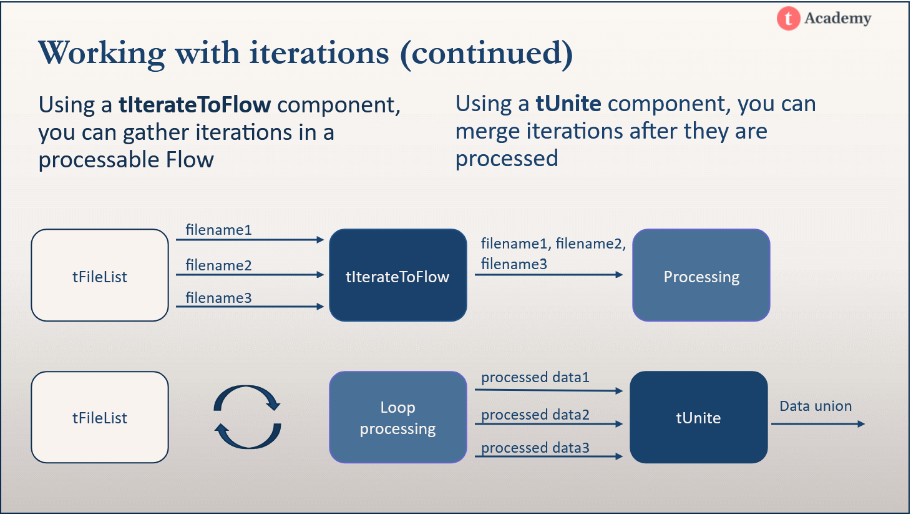
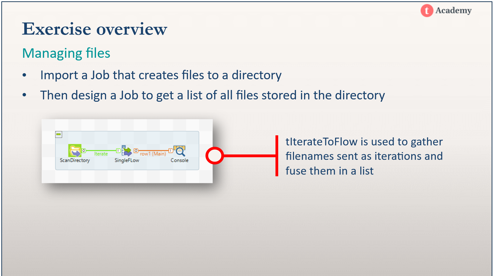
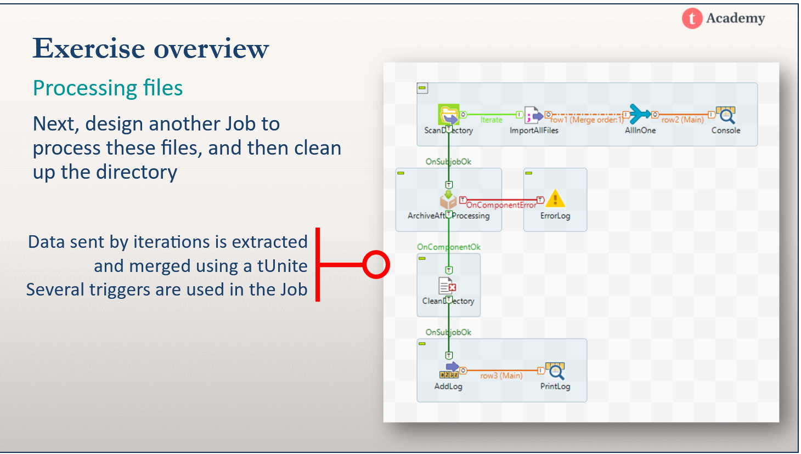
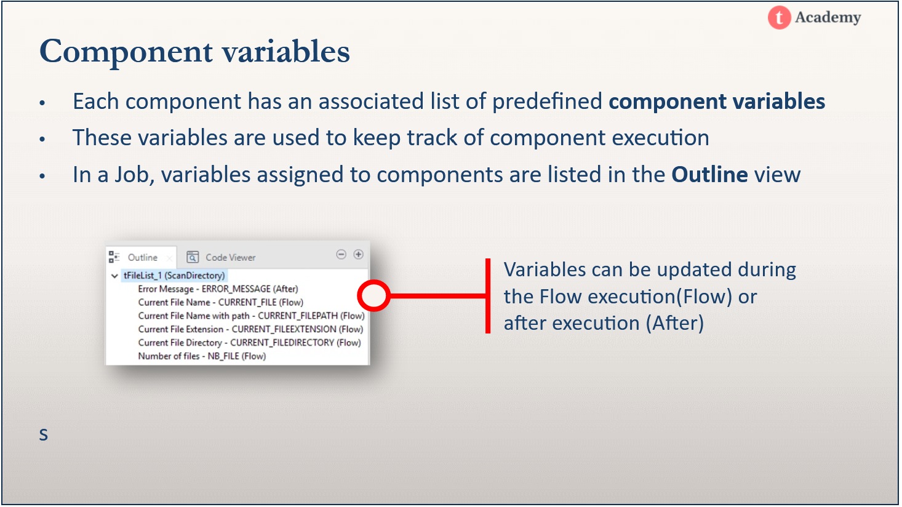
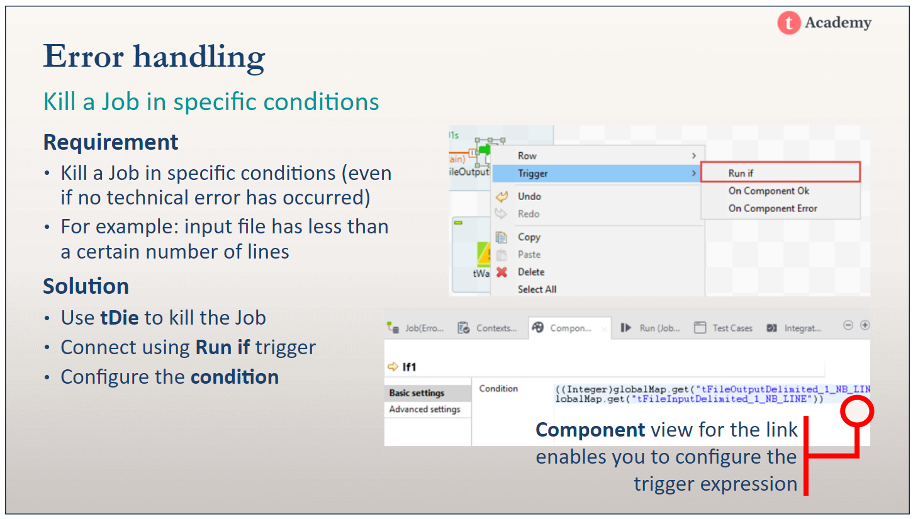
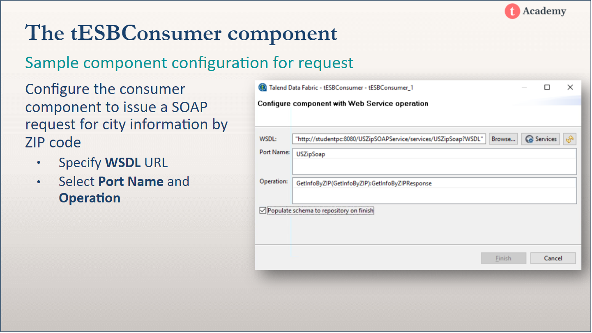
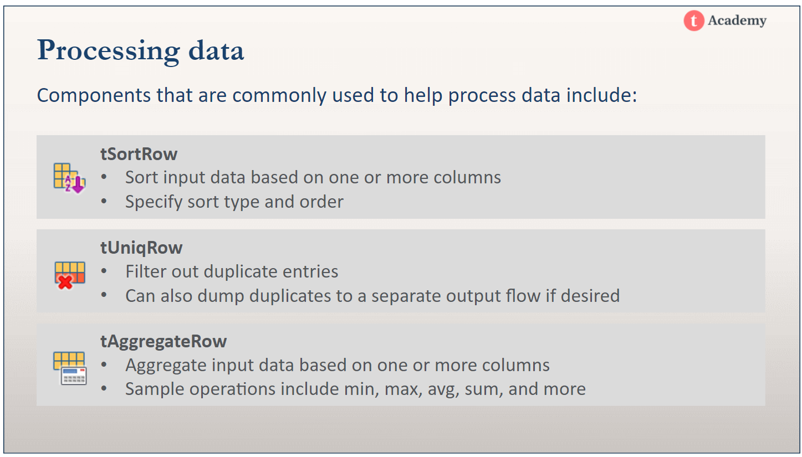
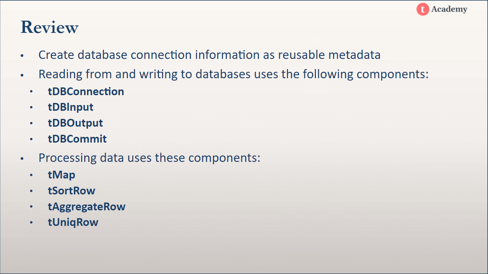

Jobs, subjobs and components
Files
Databases
Building standalone and Docker images from Jobs
Case Study: Creating a master sales table from Sales, Product and Customer data
Components - predefined units of Java code that performs specific operations on data (implementation is hidden by default)
Jobs - comprises one or more SubJobs
SubJobs - comprises one or more connected components performing a specific task
Rows - carries data to the next component
Triggers - transfers proccessing control to the next component or SubJob
Master Job - a Job whose SubJobs are Jobs
Joblets - reusable groups of components
JobServer - an agent that runs Talend Jobs on computers
CSV files - Comma Separated Values files
Job Designs -> right click -> create job
Adding a component
Linking components
Renaming components
Help page
Main row
Main rows pass the data flow from one component to another, iterating on each row and reading input data according to the component’s properties setting.
Schemas
Schemas logically assemble and group data that will be read and processed by a component.
Metadata is stored in the Repository and can be reused across jobs and components.
Built-in metadata - requires you to enter data in the component configuration manually. Let's you set the properties specific to a single component without affecting other components.
Repository properties - properties stored in the repository that can be reused in different components in a single Job and components across different Jobs in the same project. When you change your repository metadata, you have the option to choose which dependent components to propogate your changes to.
Generic schemas - can be used by any component; often used to configure components of different types with the same schema
Changes to the repository metadata can be selectively propogated to all jobs and components making use of that metadata.
Changing the Property Type of a component to built-in severs the link between that component and the repository metadata.
Use impact analysis before updating metadata to see which jobs and components will be impacted.
Consider duplicating frequently updated metadata to keep a master copy.
Use context variables in the definition of metadata to update metadata through updating the context setting.
Some types of metadata
tMap - use for joining data, mapping data
tAggregateRow - use for aggregate functions with group by
tSortRow - sorting rows
tSelectRow - selecting n-many rows from a table
Context variables let us configure environment variables so we can set up different execution environments like test, development and production environments.
tContextLoad - override context variables for a Job
tContextDump - export context variables
Context param field of the tRunJob component
Exported jobs can only run on other Talend instances.
Built jobs are standalone jobs that can run anywhere.
You can build jobs that run on Windows, Linux and in Docker containers.
Build a job as an executable that can run on Windows or Linux or as a Docker image.
When building a job, the 'Override parameters' values' button lets you update, add or remove context parameters and values of the Job context you selected in the list.
Docker
A standalone job contains:
Building a Docker images requires:gi
Image name is the Job name and location in your Repository
Tag is the Job version (lets you distinguish between different versions of a Docker image created from the Job)
Docker CLI
# view docker host info docker -H dockerhost info # view docker images docker -H dockerhost images # view running containers docker -H dockerhost ps # running docker images # context flag is optional docker -H dockerhost run <image_name> [--context=selectcontext]



tFileList - iterates over files in a directory
Use iterate connection with tFileList to loop a process on files stored in a directory

Die-on error - stops the Job when an error is encountered in the component
Triggers - tranfer control based on subjob and component status
Kill a job - use the tKill component to kill a job when a specified condition is met
Warning - use the tWarn in the same way as you would use a tKill, but you get a warning message instead of killing the job.
log4jlevel - configure which messages to log to the console

tESBConsumer - for accessing web services
tXMLMap - mapping the XML response and configuring it to be used in data integration flow



Reference projects in Talend Studio
You can reuse items (for example, Jobs, metadata, and Business Modeler) from the referenced project in the main project.
You can establish references between two projects if you have read/write authorization for both.